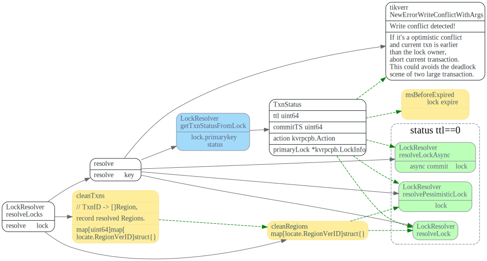
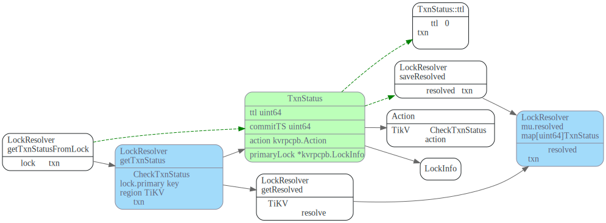
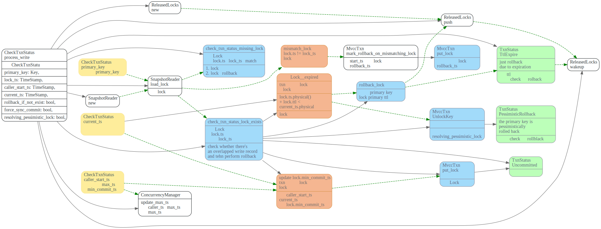
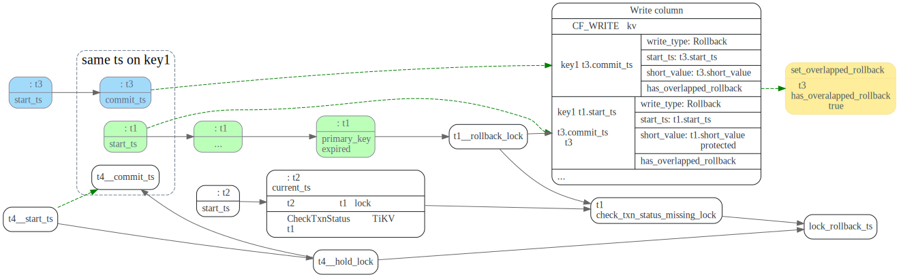
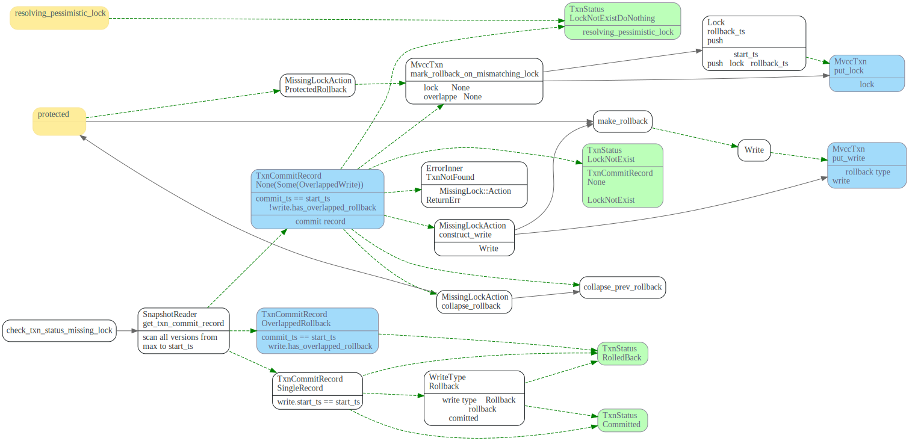
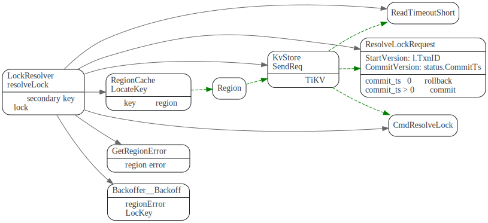
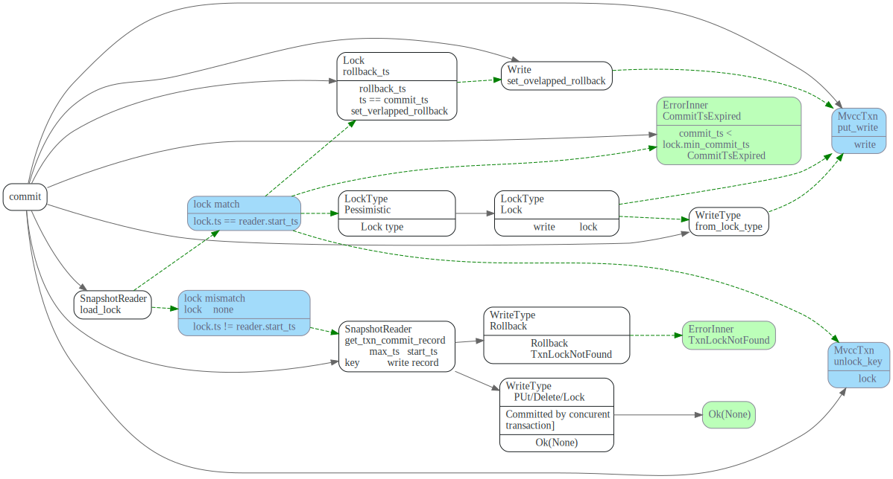
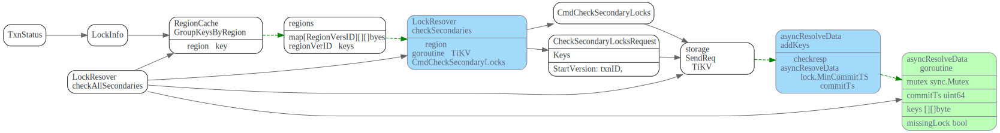
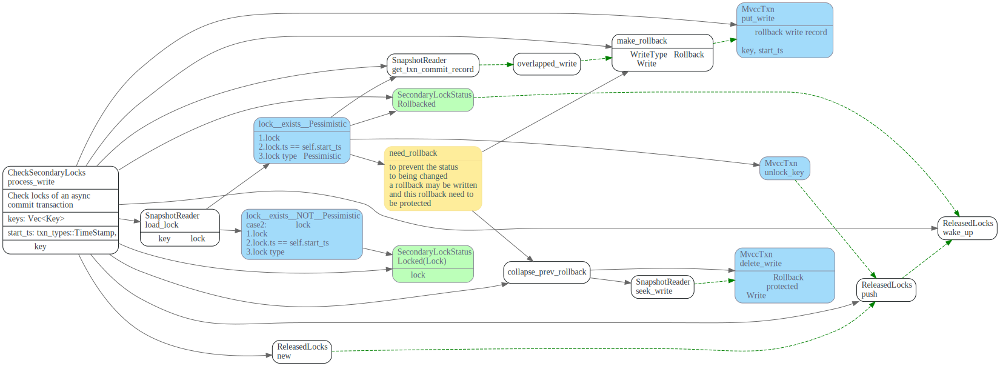

Resolve Lock
- 在事务(假定为t1) 在Prewrite阶段执行时，如果遇到Lock冲突，首先会先根据Lock.primaryKey 获取持有该lock事务（假定为t2) > 状态，如果primary key的lock已过期， 则尝试清理t2遗留的lock(cleanup或者commit).
- Asncy commit 需要check所有的secondaris keys判断事务(t2)的
commit_ts- WriteType::Rollback类型的Write,写入的key ts为事务的
start_ts,可能和其他事务的commit_ts相等， 因此在commit或者rollback_lock时，需要特殊处理。
Prewrite 阶段处理lock冲突
在TiDB prewrite阶段，如果遇到lock，会尝试resolveLocks，resolveLocks会尝试获取 持有lock的事务的状态，然后去resolve lock. 如果lock 没有被resolve, 还被其他 事务所持有，则返回要sleep的时间。prewite BackoffWithMaxSleep后，重新尝试去resolve locks。

TiDB resolve lock 流程如下
// ResolveLocks tries to resolve Locks. The resolving process is in 3 steps:
// 1) Use the `lockTTL` to pick up all expired locks. Only locks that are too
// old are considered orphan locks and will be handled later. If all locks
// are expired then all locks will be resolved so the returned `ok` will be
// true, otherwise caller should sleep a while before retry.
// 2) For each lock, query the primary key to get txn(which left the lock)'s
// commit status.
// 3) Send `ResolveLock` cmd to the lock's region to resolve all locks belong to
// the same transaction.

对于primary key已经过期的事务，则尝试去resolve locks，根据事务类型有不同的resolve 方法
resolveLock: resolve正常提交的乐观事务lockresolveLocksAsync: 处理async commit的乐观事务txn locks，需要checkAllSecondaris key的min_commit_ts来计算最终的commit_ts.resolvePessimisticLock: resolve 悲观事务lock
获取事务状态
client getTxnStatusFromLock
resolveLocks 首先会根据lock.primarykey, 调用LockResolver::getTxnStatus去获取持有这个lock的事务的状态。

TiKV CheckTxnStatus
事务(假定为t2)，prewrite阶段遇到Lock(假定为事务t1的lock)冲突时，会发CheckTxnStatus GRPC请求到TiKV 该Cmd主要功能如下：
#![allow(unused)] fn main() { /// checks whether a transaction has expired its primary lock's TTL, rollback the /// transaction if expired, or update the transaction's min_commit_ts according to the metadata /// in the primary lock. /// When transaction T1 meets T2's lock, it may invoke this on T2's primary key. In this /// situation, `self.start_ts` is T2's `start_ts`, `caller_start_ts` is T1's `start_ts`, and /// the `current_ts` is literally the timestamp when this function is invoked; it may not be /// accurate. }
CheckTxnStatus 根据lock.primary_key检查事务t1的状态，在检查过程中，如果t1的lock过期，则可能会rollback t1。
主要会调用check_txn_status_lock_exists和check_txn_status_missing_lock来处理lock的几种可能情况:
-
check_txn_status_lock_exists： 如果Lock存在且t1还持有该lock， 如果lock没过期，更新lock的min_commit_ts, 返回TxnStatus::Uncommitted状态；如果lock已过期，会rollback_lock, 并返回TxnStatus::Expire状态. -
check_txn_status_missing_lock：lock不存在或者lock.ts已经不是t1了，t1可能已经commited了，也可能被rollback了。 需要调用get_txn_commit_record，扫描从max_ts到t1.start_ts之间key的write record来判断t1状态。
调用流程图如下，其中黄色的是GRPC请求中带上来的数据。
primary_keylock的primary keycaller_start_ts如果lock没被提交或者rollback，会用它来更新lock的min_commit_tscurrent_ts调用getTxnStat接口时，传入的当前ts.

rollback_lock
t1的primary lock过期时，rollback_lock调用流程如下:
如果locktype 为put, 并且value没有保存在Lock的short_value字段中，则需要删掉之前写入的value.

主要是提交了Rollback类型的Write, 注意此处的key为 key t1.start_ts, 而不是key t1.commit_ts
这是和pecolator论文中不一样的地方，可能会出现t1.start_ts和其他事务commit_ts一样的情况。
get_txn_commit_record
事务t2遇到持有lock时t1时，调用get_txn_commit_record 扫描从max_ts到t2.start_ts的所有write record，
获取事务t1的状态。
TxnCommitRecord::SingleRecord
找到了write.start_ts = t1.ts1的WriteRecord，可以根据
该record的WriteType来判断事务状态，如果为Rollback则事务状态为rollback. 否则就是Committed。
TxnCommitRecord::OverlappedRollback
找到了t1.start_ts == t3.commit_ts，t3的write record，并且t3 write record中
has_overlapped_write为true，这时候可以确定事务的状态为Rollback
事务t1.start_ts和事务t3.commit_ts相同，并且write columns中，t3的write已经提交了。如果
直接写入t1的rollback，会覆盖掉t3之前的提交。为了避免该情况，只用将t3 write record中的
has_overlapped_rollback 设置为true即可。

TxnCommitRecord::None(Some(write))
找到了t1.start_ts == t3.commit_ts t3的write record，并且
t3 WriteRecord的has_overlapped_write 为false，后续rollback_lock和check_txn_status_missing_lock
会将该字段设置为true.
t1先写入write rollback, 然后t3 commit时，会覆盖掉t1的write rollback.

TxnCommitRecord::None(None)
如果状态为TxnCommitRecord::None(None),并且Lock 现在被t4所持有，则将t1.start_ts
加入到Lock.rollback_ts数组中，这样在t4被commit时，如果t4.commit_ts == t1.start_ts
会将t4的write record的has_overlapped_write设置为true.
从max_ts到t2.start_ts没找到相关的write record.
check_txn_status_missing_lock
check_txn_status_missing_lock会调用get_txn_commit_record计算t1的commit状态，

另外一种情形是，t1.start_ts == t3.commit_ts, 并且t1先被rollback了, t3 commit时， 会覆盖掉t1的rollback write record，这种check_txn_status_missing_lock 更新t3 commit 的has_overalpped rollback设为为true.
上图中绿色的就是最后返回的txn status, 对应的enum如下,在TiDB中对应于返回字段中的Action.
#![allow(unused)] fn main() { /// Represents the status of a transaction. #[derive(PartialEq, Debug)] pub enum TxnStatus { /// The txn was already rolled back before. RolledBack, /// The txn is just rolled back due to expiration. TtlExpire, /// The txn is just rolled back due to lock not exist. LockNotExist, /// The txn haven't yet been committed. Uncommitted { lock: Lock, min_commit_ts_pushed: bool, }, /// The txn was committed. Committed { commit_ts: TimeStamp }, /// The primary key is pessimistically rolled back. PessimisticRollBack, /// The txn primary key is not found and nothing is done. LockNotExistDoNothing, } }
type Action int32
const (
Action_NoAction Action = 0
Action_TTLExpireRollback Action = 1
Action_LockNotExistRollback Action = 2
Action_MinCommitTSPushed Action = 3
Action_TTLExpirePessimisticRollback Action = 4
Action_LockNotExistDoNothing Action = 5
)
清理expired lock
resolveLock
TiDB 获取根据Lock.primary key获取完txn状态后， 开始resolve secondary key的lock.向TiKV 发起resolve Lock request.

TiKV 执行CmdResolveLock
TiKV收到ResolveLock Request后，有三种case
commit_ts > 0, 并且txn还持有该lock，则commitcommit_ts == 0, 并且txn还持有该lock, 则rollback.- 如果lock为None, 或者lock.ts已经发生改变了，则
check_txn_status_missing_lock

其中rollback和 check_txn_status_missing_lock 逻辑和上面 CheckTxnStatus中的一致。
TiKV commit 处理流程:

resolveLocksAsync
TiDB 中首先调用checkAllSecondaries来获取txn的Status, 然后对所有的secondaries keys按照region分组，并且每个分组启动一个go routine, 并发的发送CmdResolveLock 请求给TiKV

client checkAllSecondaries

TiKV CmdCheckSecondaryLocks
#![allow(unused)] fn main() { /// Check secondary locks of an async commit transaction. /// /// If all prewritten locks exist, the lock information is returned. /// Otherwise, it returns the commit timestamp of the transaction. /// /// If the lock does not exist or is a pessimistic lock, to prevent the /// status being changed, a rollback may be written. }
#![allow(unused)] fn main() { #[derive(Debug, PartialEq)] enum SecondaryLockStatus { Locked(Lock), Committed(TimeStamp), RolledBack, } }
lock match
如果txn还持有该lock，对于乐观事务，会返回lock信息，而悲观事务，则会unlock key? 向write column 写入rollback信息。(为什么？）

lock mismatch
如果lock已经被其他事务所持有。或者Lock已经被resolve.

resolvePessimisticLock
PessimisticLock事务的悲观锁，多了一个forUpdateTs, 而且是直接清理lock，不像乐观锁那样，要写入rollback 类型的Write， 这个是为什么呀？

TODO
研究下这个rollback must be protected。 // The rollback must be protected, see more on
OverlappedRollback 和overlapped write代表什么意思？
// issue #7364
Assume that we have three clients {c1, c2, c3} and two keys {k1, k2}:
- Pessimistic client c1 acquires a pessimistic lock on k1(primary), k2. But the command for k1 is lost at this point.
- Optimistic client c2 requires to clean up the lock on k2
- k1 is rollbacked and a write record ("rollback", c1_start_ts, not_protected) is written into k1 (not_protected because the lock on k1 is missing), and a cleanup(primary=k1, ts=c1_start_ts)(*1) is sent but lost at this point.
- Client c3 prewrites k1
- Client c2 requires to clean up the lock on k1
- k1 is rollbacked and the rollback write record is collapsed to ("rollback", c3_start_ts, protected/not_protected)
- Client c1 retries to lock on k1
- k1 is locked by c1
- Client c1 prewrites k1, k2
- k1, k2 are prewrited by c1, and c1 received the prewrite succeed response
- The lost cleanup command (*1) in step 3 is received by k2, therefore k2 is rollbacked
- Client c1 commit k1
- k1 is committed, while k2 is rollbacked
Then atomic guarantee is broken.
get_txn_commit_record 这方法需要仔细研究下。
rollback, make_rollback, collapse_prev_rollback 这几个关系是啥？
lock rollback ts
commit_ts和start_ts 相等的时候会出现的情况。
为什么会出现相等呢？
写WriteType::Rollback时候，用的是start_ts, 而key被commit时候，write record的
key为key commit_ts, 当start_ts == commit_ts时，事务的rollback可能被
commit_ts所覆盖掉。
按照pecolator论文，commit时候，commit_ts一定比之前所有的start_ts大呀，为什么还会出现 被覆盖掉的情况呢？
是不是和Pingcap引入了并发的prewrite有关呢？